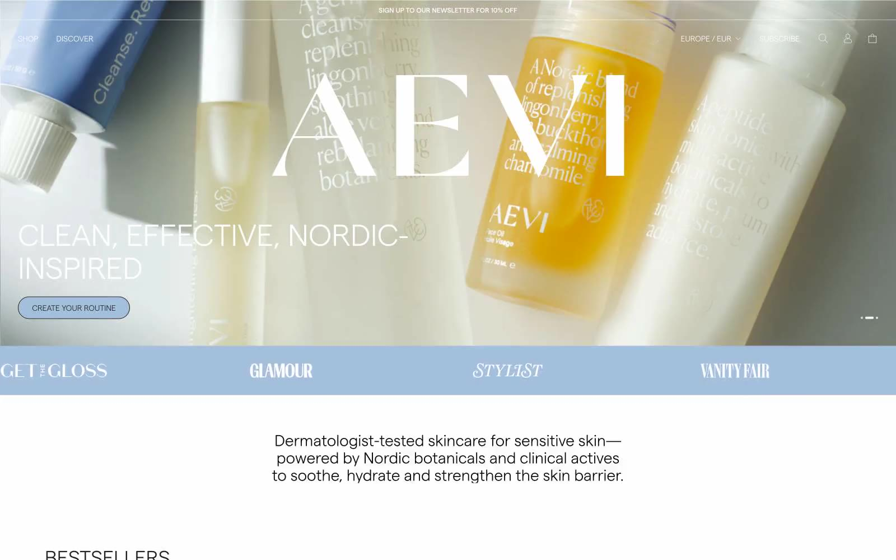

Aevi Wellness 的 Design.md 主题展示，围绕健康生活、消费品牌、医疗健康、浅色界面组织页面。
Explore Aevi Wellness's light E-commerce design system: Canvas White #ffffff, Charcoal Text #231f20 colors, Primary Font, Custom Font 1 typography, and...

#231f20: #231f20#000000: #000000#ffffff: #ffffff#d5e0ea: #d5e0ea#a3bfdb: #a3bfdb#134fc2: #134fc2#006fcf: #006fcf#ffa8cd: #ffa8cd#5a31f4: #5a31f4#fff48d: #fff48d#005b9a: #005b9a#0e73b9: #0e73b9display: Primary Fontbody: Custom Font 1mono: ui-monospacehints: Primary Font,Custom Font 1,ui-monospace,Custom Font 2